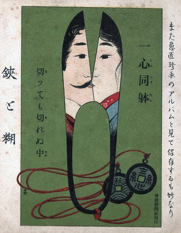
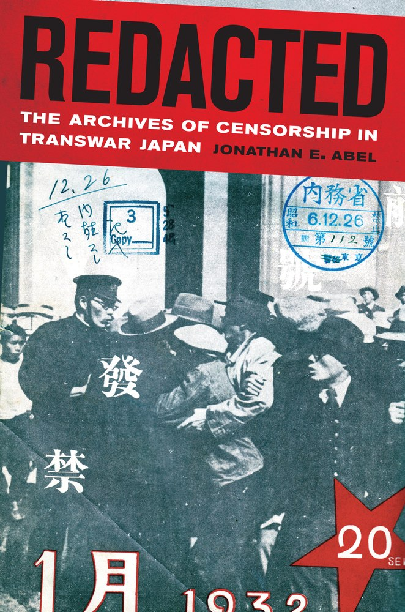

Deleted

This book does not contain...
Redacted
The Archives of Censorship in Transwar Japan

work on the transwar continuities of censorial offense between fraternization and kissing.
work on the two most banned authors in imperial and occupation Japan—Hasegawa Nyozekan and Miyamoto Yuriko.
work on the censorship of religious material.
work on the redactionary functions of underwear (panchira) in postwar film.
and much, much more...


A masterful blending of incisive, close textual analysis, subtle situating of literary texts in their historical moments, and attention to the very materiality of book culture, Redacted presents is truly original thinking about how literature is formed and malformed, written, received, and read, under the pressure of censorship. It does nothing less than reveal a complex but hidden history of modern Japanese literature. It dramatically alters our vision of that literature, and of all literature shaped by censorship, while at the same time providing a master class in how to read the hidden shapes of literary form. A thrilling example of literary historical scholarship that combines the palpable excitement of archival work and the elucidating intensity of close reading.” — Alan Tansman, author of The Aesthetics of Japanese Fascism